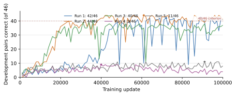
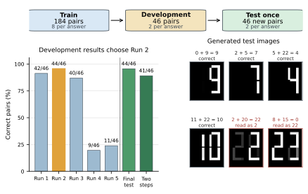

Can Generative Image Models Reason Through Each Other’s Outputs?
Abstract
Can separately trained image models use one another’s drawings to solve a new problem? We train five models from scratch to draw the sum of two pictured numbers modulo 23. Three meet the preset development threshold and enter the transfer experiment. A program copies one model’s drawn answer into a second, held-out addition for another model, without converting it to text. Both sums are correct in 76% of all planned trials between different models. We also test the second addition with a clean image of the same number. When the first drawing is correct and the second model solves the clean version, it also solves the version with the drawing in 98% of trials.
In a separate binary-addition experiment, seven independently trained models correctly use one another’s generated digits in 99% of tests between different models. A SANA image generator and a CNN trained from scratch also alternate through complete multiplication problems. Yet changing the appearance of a correctly read digit sometimes changes the next answer. The models can calculate from new operand pairs and other models’ drawings, but their calculations still depend on how those numbers are drawn.
Results
Download data ↗The experiments test new operand pairs, drawings passed between separately trained models, and repeated calculation. The counts distinguish complete two-step trials from the comparison that isolates the effect of a generated digit.
| Experiment | Result | What is counted |
|---|---|---|
| Held-out addition, one step | 89.1% | Mean accuracy of the three selected runs: 41, 44 and 38 correct out of 46 pairs each. |
| Two additions across different models | 210 / 276 76.1% | Both answers correct, counting every planned different-model trial. |
| Generated digit replaces a clean digit | 210 / 215 97.7% | Different-model trials where the first drawing is correct and the second model solves the clean-digit version. |
| Binary addition across different models | 663 / 672 98.7% | Correct next answers across seven models; both independent digit readers must agree. |
| Alternating-model multiplication | 56 / 56 | Correct final products across the tested two-, four- and eight-bit operand pairs. |
The modulo-23 exchange uses three of five independently trained runs, selected by a development score of at least 40/46 before evaluating the held-out test pairs.
Passing drawings between models
Each row shows which model drew the first answer; each column shows which model uses that drawing in the next addition. Select an experiment, then a cell to inspect its result.
Each cell counts correct next answers among trials where the first drawing is read correctly and the second model solves the clean-digit version.
Run 1 → Run 2
Correct second answers when the first drawing is correct and the clean-digit version succeeds.
Different models: 210 / 215 (97.7%). All planned different-model trials: 210 / 276 (76.1%).
Repeated calculation
A control program coordinates the partial products and passes generated images between a SANA model and a CNN trained from scratch. The models alternate after every call. All 56 tested multiplication programs calculate the final product correctly.
| Operand width | Correct products | Calls per program | Longest dependent sequence |
|---|---|---|---|
| 2 bits | 16 / 16 | 6 | — |
| 4 bits | 20 / 20 | 28 | 9 calls |
| 8 bits | 20 / 20 | 120 | 21 calls |
Total calls include independent partial products. The longest dependent sequence counts only calls linked by generated outputs; at eight bits it includes 20 successive switches between the two models.
Learning additions the models have not seen
Inputs show numbers from 0 to 22 as seven-segment digits. The model draws their sum modulo 23: for example, 9 + 14 wraps around to 0. Of 276 unordered number pairs, 184 are used for training, 46 for development and 46 for testing. All answers appear in every split; the held-out operand pairs are new.


Scope
The models work with fixed digit boxes. A program chooses the operations and places the images; the models do not choose their own sequence of steps. Binary training includes all eight local addition cases. Modulo-23 testing holds out operand pairs within the same family of digit renderings. These experiments establish input-output behavior, not the models’ internal calculation method.